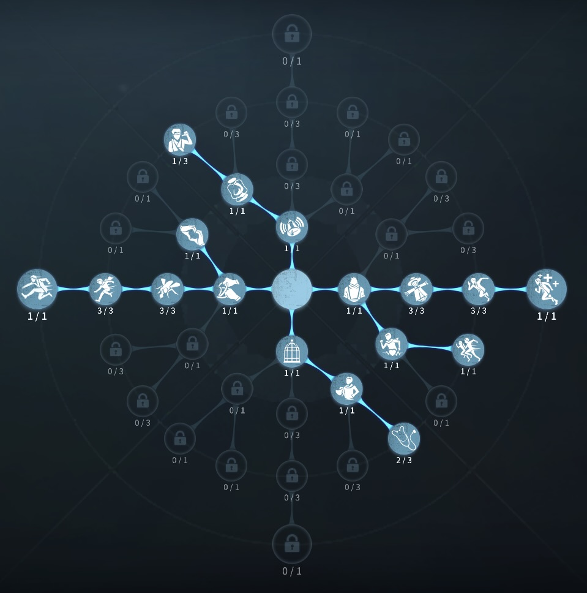
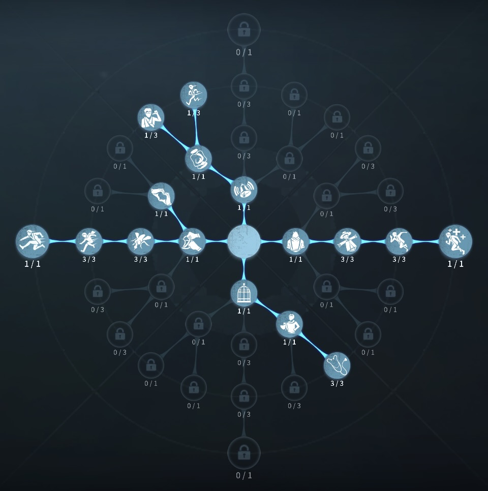

祭司の評価
巧みなワープで味方を補助
外在特質と特徴
特質1:扉の鍵
・祭司は扉の鍵を張ることで壁の向かい側や上下にワープすることができる。 ハンターが扉の鍵に入ると消滅し、ワープ先でスタンする。最低1.7秒最大3.1秒。 ほかのサバイバーも入ることができる。・またワープはハンターの通常攻撃か一部のスキル攻撃が命中すると破壊される。通路は生成してから約70秒で自動消滅する。
・祭司は扉の鍵を使用しサバイバーとの間に長距離ワープを張ることができる。このワープは祭司が新たな長距離の通路を生成するかハンターによって破壊されるまで持続し、全てのキャラクターに長距離の通路の輪郭が表示される。長距離ワープに入った祭司以外のサバイバーは残像が生成され、ハンターは残像を攻撃することで1秒後にサバイバーに同じダメージを与えることができる。ハンターは入ることができない。残像はワープの長さに伴い存在する。
特質2:虚弱
・板窓操作10％低下特質3:唯心
・解読速度10％低下。解読の調整判定30％低下。調整発生率が30％増加。特質4:神の加護
・仲間の治療時間10％短縮、祭司の治療時間30％短縮。特徴
マップによっては評価11をつけたくなるサバイバー ワープ補助での確定板当てや送還ワープ、確定救助、地下救助、長距離ワープ、入れ替わりワープなど理不尽極まりない。しかし、ワープポジションを必ず覚えておくことが必須になる。
基本的な立ち回り方
1. 追われた時
無限アイテムのワープは惜しまずに使いまくろう！
マップによってワープを最大限強く活用することで、バク伸びチェイスの可能性がある。
2. 追われない時
解読をし、状況をみて補佐ワープを張ったり、長距離ワープを張ろう。（長距離ワープは救助職に張っておくと、暗号機の引き継ぎをスムーズにできる。）
おすすめの内在人格
膝蓋腱反射型人格
この内在人格は、膝蓋腱反射でチェイスを強くし、ピア効果で救助後のワープを貼りやすくした人格

膝蓋腱反射治療型人格
この内在人格は、膝蓋腱反射でチェイスを強化し、治療を最大化した人格


みんなのコメント